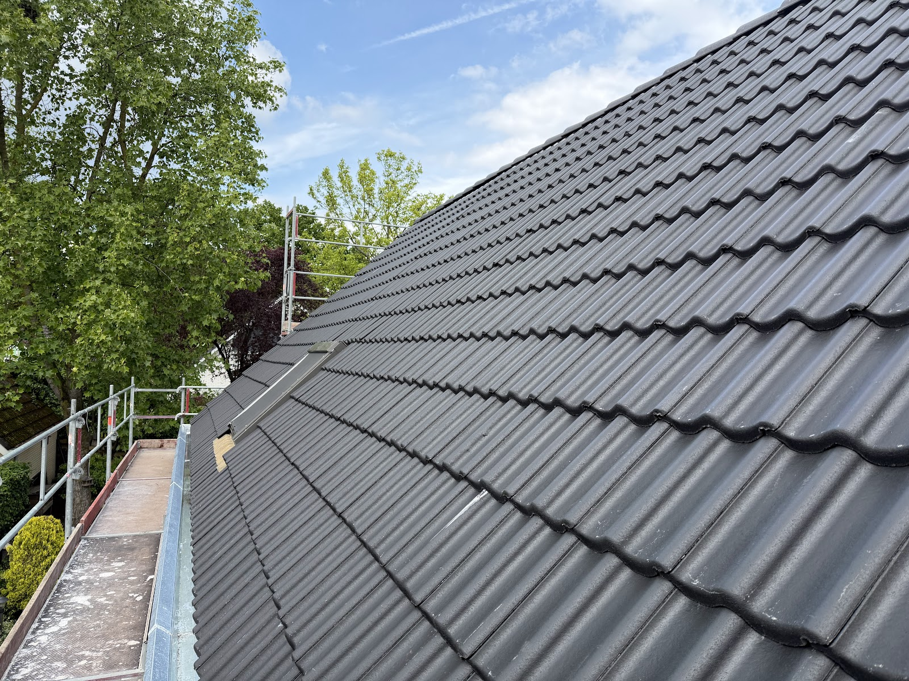
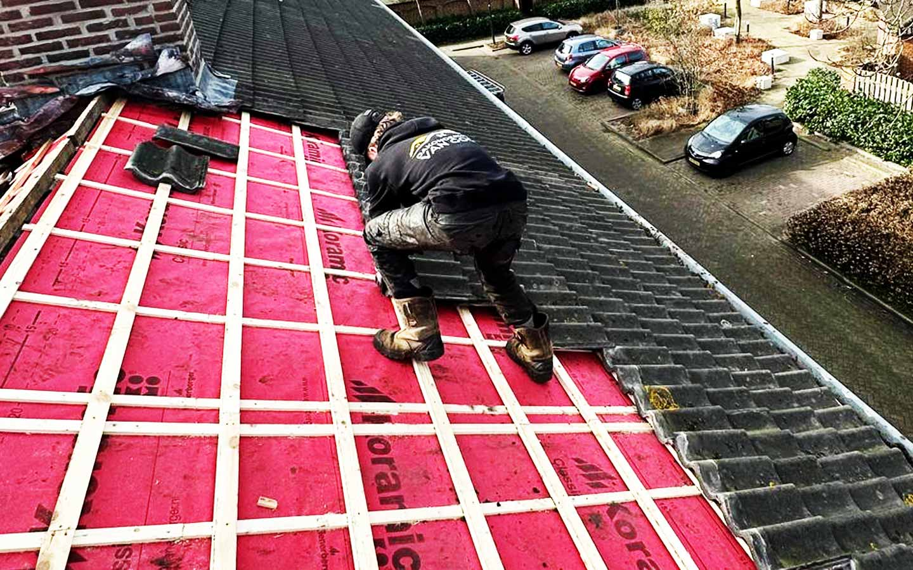
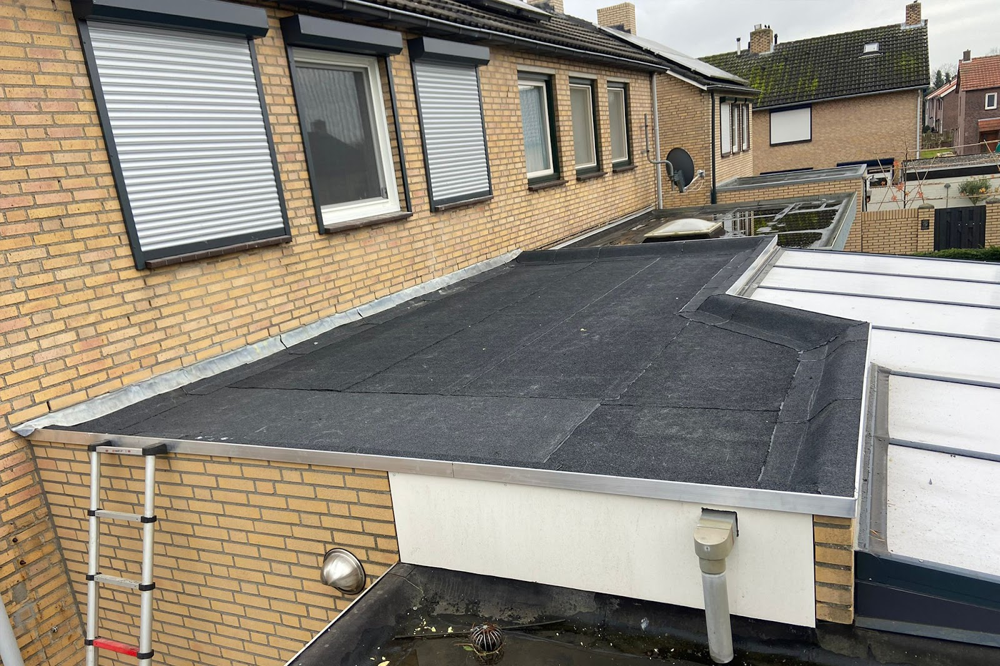
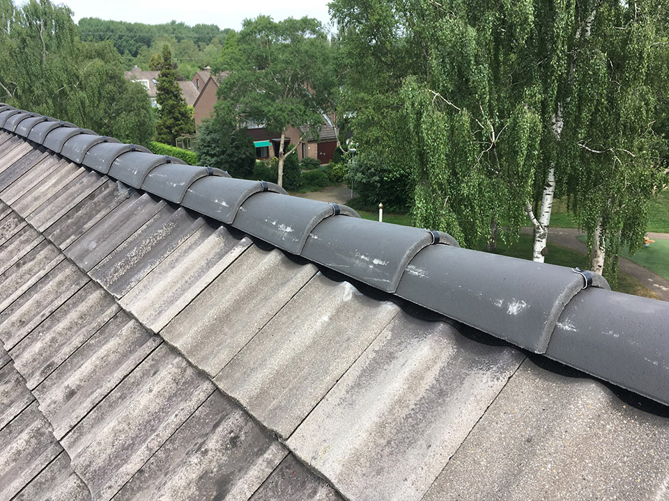
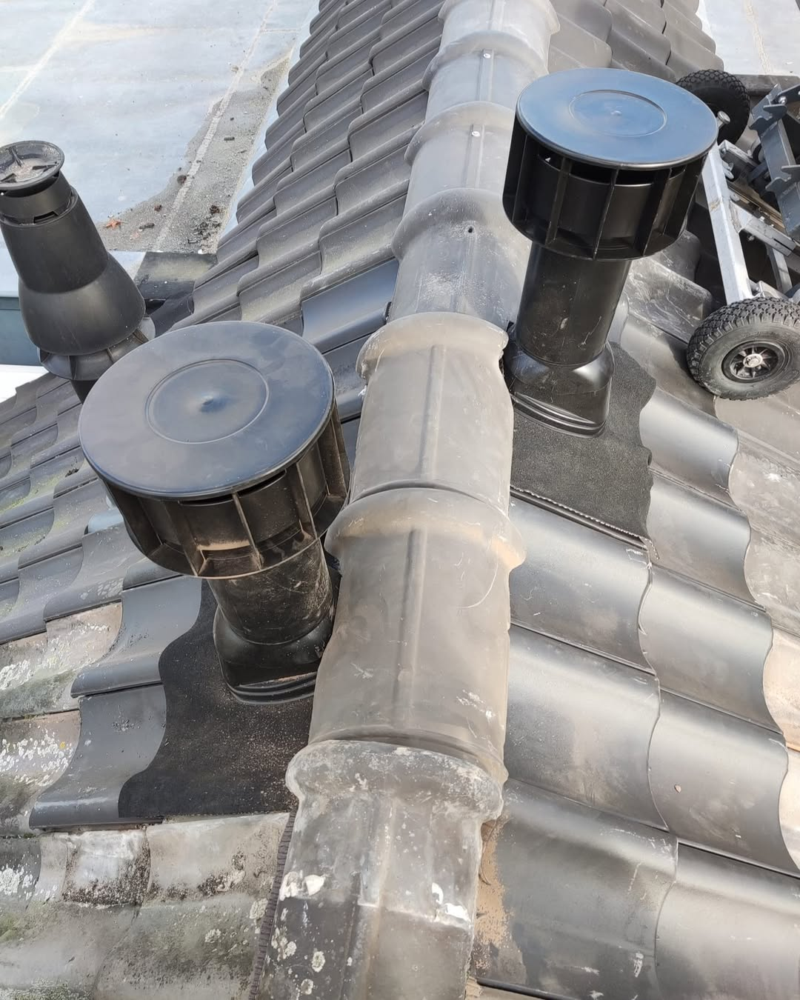
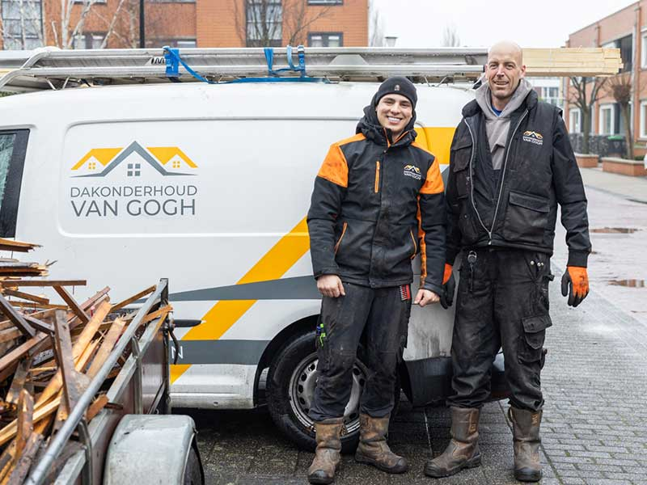
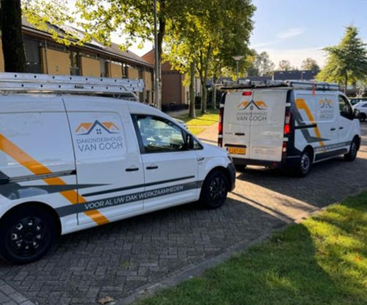

Dakrenovatie
Keren dezelfde lekkages steeds terug, of is uw dak op leeftijd? Dan pakken we het in één keer aan: bedekking, ondergrond, isolatie en afwerking. Eén steiger, één ploeg, één keer overlast.
Dakdekker in Ede, voor platte en hellende daken
Lekkage, losse pannen of een dak dat op is? Wij komen gratis kijken, zoeken de echte oorzaak en vertellen eerlijk wat er nodig is.
4,5 uit 49 Google-reviews
Bel ons, dag en nacht. Bij spoed komen we dezelfde dag nog kijken, ook in het weekend, in Ede en omstreken. We dichten het lek en zoeken daarna rustig uit waar het water echt binnenkomt.
Wij zijn een allround dakdekkersbedrijf. Plat of hellend, pannen of bitumen: we repareren wat te repareren valt en vernieuwen alleen als dat op termijn goedkoper is.

Keren dezelfde lekkages steeds terug, of is uw dak op leeftijd? Dan pakken we het in één keer aan: bedekking, ondergrond, isolatie en afwerking. Eén steiger, één ploeg, één keer overlast.

Scheuren, blazen en losgelaten naden herstellen, of een nieuwe laag erop branden met strakke aluminium trims.

Lekkage snel opgespoord en vakkundig gedicht, op plat én hellend dak.
Losse of gebarsten pannen, lood bij schoorsteen, dakkapel of dakraam, en nokvorsten waar het cement uit is gebrokkeld.
Kapotte of poreuze pannen vervangen, zodat uw pannendak weer dicht is.
Van binnenuit of van buitenaf. Een warmere zolder in de winter, een koelere in de zomer en een lagere energierekening.
Elk jaar even nalopen, goten schoon, kleine gebreken herstellen. Zo gaat uw dak vaak tien tot vijftien jaar langer mee.
De natte plek op het plafond is het eindpunt. Het water is dan al langs de isolatie gelopen, over de dakbeschotting en soms tot in de muren. Daarom zoeken wij de echte oorzaak, in plaats van alleen de natte plek af te dichten. Zo komt het probleem niet een half jaar later terug.
Kit is zelden een reparatie. Het houdt water misschien een seizoen tegen, maar beweegt niet mee met het dak en laat daarna juist los. Wij repareren lood op lood, bitumen op bitumen.

Goed nieuws: vaak hoeft het dak er niet uit. Een gerichte reparatie is meestal genoeg, als u er op tijd bij bent.
Na uw aanvraag plannen we snel een gratis dakinspectie. Daarna ontvangt u een duidelijke offerte met een vaste prijs, zodat u vooraf precies weet waar u aan toe bent.
We controleren dakbedekking, pannen, lood, goten en de aansluitingen rond schoorsteen en dakramen. Gratis en vrijblijvend.
Met vochtmeting en zo nodig een waterproef stellen we vast waar het water binnenkomt.
We repareren met materiaal dat bij uw dakbedekking hoort en dat jaren meegaat. Geen noodoplossing met kit.
We lopen het werk met u na, met foto's van wat er is gedaan, en laten het dak schoon achter.


Wij zijn een lokaal dakdekkersbedrijf en dagelijks aan het werk in Ede en omgeving. Daardoor zijn we snel ter plaatse, van Bennekom en Wageningen tot Veenendaal en Barneveld. U herkent ons aan de witte bussen met de oranje streep.
4,5 gemiddeld uit 49 Google-reviews
"Wij hadden al een tijdje last van water bij de dakkapel en ik dacht eerst ik kit het zelf wel even dicht maar dat hielp niks. Dakonderhoud Van Gogh uit Ede gebeld en die kwamen snel kijken. De vakman zag meteen dat het lood niet goed zat en de bitumen op de uitbouw was ook helemaal op. Ze hebben het dakleer van de aanb..."
"Via Google bij dit bedrijf gekomen voor een nieuw dak op mijn garage in Bennekom. Het oude bitumen was gescheurd en lekte aan alle kanten. Ze hebben er een mooie nieuwe laag op gebrand en ook de randen netjes afgewerkt met nieuwe aluminium trims. Alles is schoon achtergelaten en de prijs was precies zoals afgesproken i..."
"Na te lang een lekkende goot en persoonlijke twijfels over de dakpannen Dakonderhoud van Gogh benaderd. In tegenstelling tot andere bedrijven die niet reageerden, reageerde van Gogh wel snel. Met een duidelijk offerte en de mogelijkheid om op korte termijn het dak aan te pakken. Na een prettig gesprek, duidelijk en e..."
Bel of mail ons, of laat hiernaast uw gegevens achter. We komen langs, kijken van boven en van binnen, en u hoort meteen wat er aan de hand is. Een prijs noemen we pas als we het dak met eigen ogen hebben gezien.
Bel 06 10339123